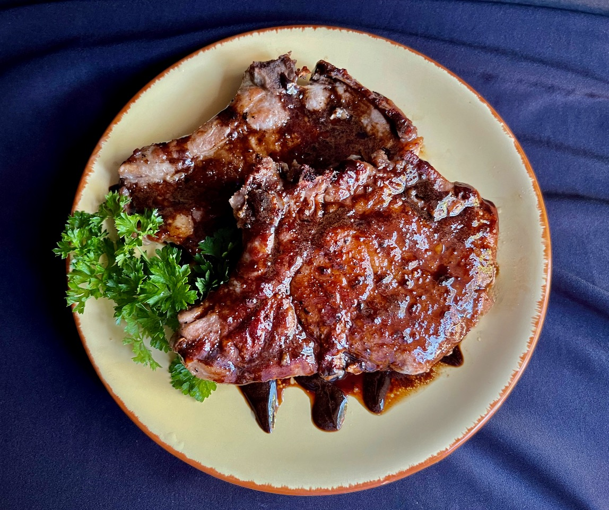

<!DOCTYPE html>

<html lang="eng">
	<head>
		<meta charset="UTF-8">
		<title>Balsamic-Pork-Chops</title>
	</head>
</html>

<body>
	<h1>Balsamic Pork Chops</h1>	
		
	<h2>Ingredients</h2>
	<ul>
		<li>4 (5 ounce) bone-in pork chops, 3/4-inch thick</li>
		<li>salt and freshly ground black pepper to taste</li>
		<li>1 tablespoon butter</li>
		<li>1 tablespoon olive oil</li>
		<li>1 cup chicken broth</li>
		<li>¼ cup good quality balsamic vinegar</li>
		<li>1 tablespoon honey</li>
	<ul>
	<h2>Steps</h2>
	<ol>
		<li><b>Step one</b><br>Pat pork chops dry with paper towels, and season with salt and pepper.</li>
		<li><b>Step two</b><br>Melt butter in a large, nonstick skillet over medium heat. Add olive oil <br>and stir to combine.</li>
		<li><b>Step three</b><br>When butter and oil shimmer, carefully add chops and cook over medium heat<br> until browned on one side, 5 to 6 minutes. Turn and cook pork chops until no longer pink in <br>the center and browned on the other side, 3 to 4 minutes. <br>Do not overcook the chops or they will turn dry and hard. An instant-read thermometer <br>inserted into the center should read 145 degrees F (63 degrees C).</li>
		<li><b>Step four</b><br>Remove pork chops from heat and cover to keep warm.</li>
		<li><b>Step five</b><br>Combine chicken broth, balsamic vinegar, and honey in a small saucepan.<br> Bring glaze to a boil over medium-high heat and boil until mixture <br>is reduced to 1/2 cup, 5 to 6 minutes</li>
		<li><b>Step six</b><br>Drizzle pan-fried chops with balsamic glaze and serve warm.</li>
	</ol>
</body>